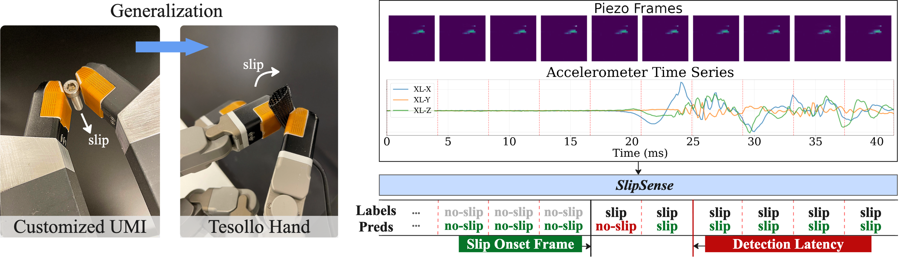
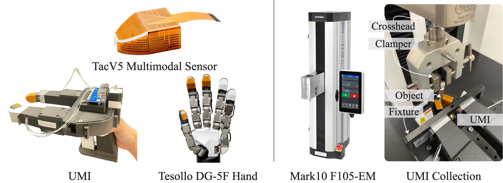
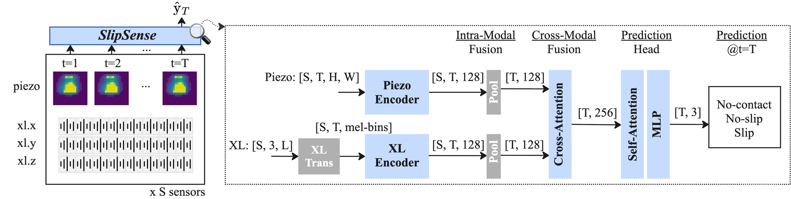
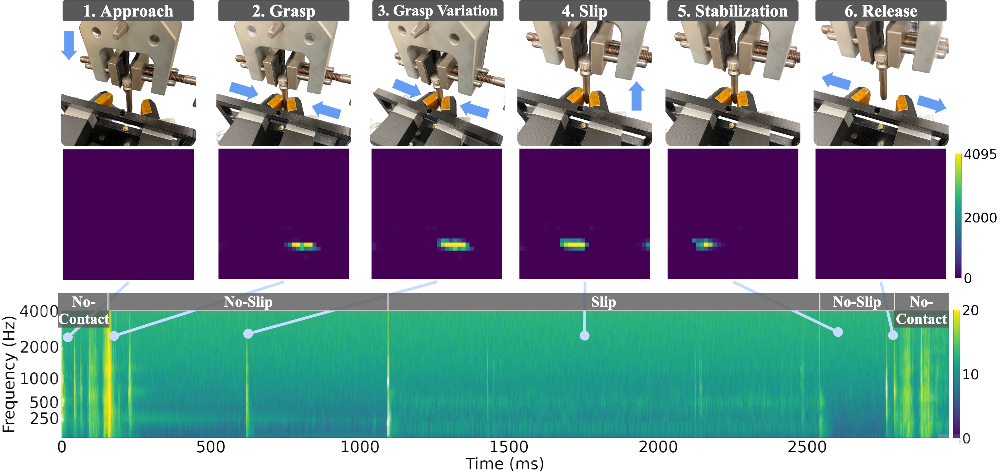
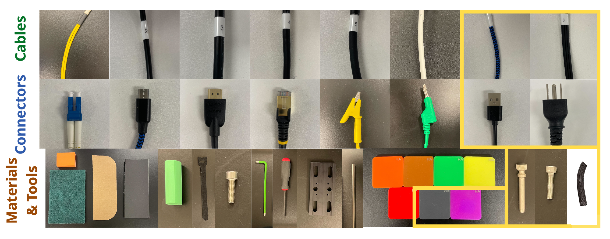
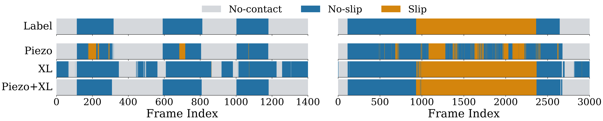
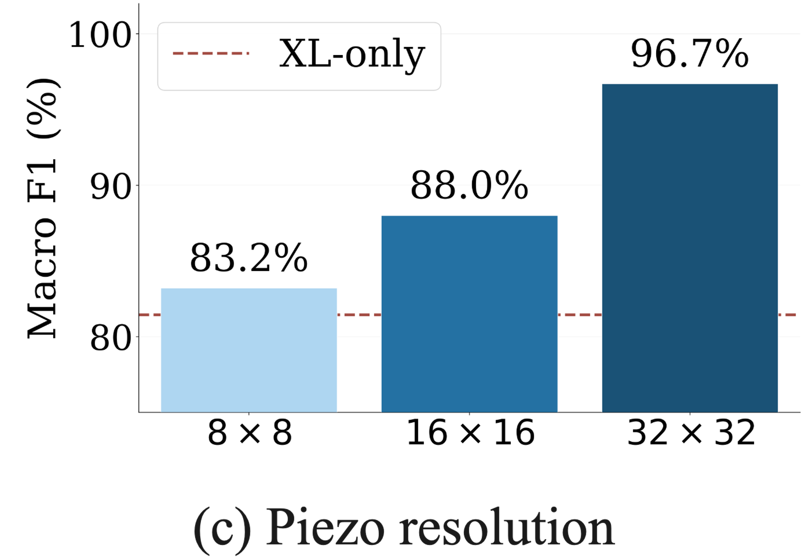
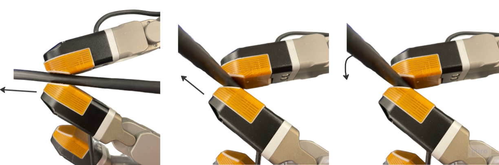

Slip detection is fundamental to dexterous manipulation, yet existing systems often lack precise detection latency characterization and cross-platform generalization. We present SlipSense, a multimodal tactile slip detection framework built on TacV5, a compact sensor integrating a 32×32 piezoresistive array (240 Hz) and a 3-axis MEMS accelerometer (8 kHz). The piezoresistive array captures spatial pressure distribution while the accelerometer captures friction-induced vibration, providing complementary slip cues. The framework performs modality-specific encoding, intra-sensor fusion, and cross-modal attention with causal temporal prediction at 240 Hz.
Experiments on a 1.4M-frame dataset spanning 37 objects demonstrate that the two modalities are crucially complementary: it achieves 96.7% Macro F1 with false-positive rate below 1.6%, detecting 76% of slip events within 23.1 ms. Remarkably, trained purely on a UMI, SlipSense generalizes zero-shot to a Tesollo dexterous hand, transferring across unseen objects, distinct sensor units and new robotic platforms without any retraining.
TacV5 integrates a high-density 32×32 piezoresistive array (Piezo) with a 3-axis MEMS accelerometer (XL) in a compact fingertip form factor. Piezo captures spatial normal pressure distribution at 240 Hz with ~1.55 taxels/mm², while XL captures friction-induced vibration at 8 kHz. We evaluate on two platforms: a customized UMI parallel-jaw gripper and a Tesollo DG-5F 20-DoF dexterous hand.

Piezo frames and XL spectrograms are encoded by dedicated backbones, pooled across sensors for variable-cardinality input, fused via cross-modal attention, and passed through a causal temporal classifier that predicts ternary state (no-contact, no-slip, slip) at every frame.

A single trial proceeds through six phases: approach, grasp, grasp variation, slip, stabilization, and release. The Piezo heatmaps show spatial pressure evolution while the XL spectrogram reveals friction-induced vibration transients at slip onset. Together they provide complementary cues that neither modality captures alone.



| Method | Piezo | XL | UMI ID | UMI OOD | ||||||
|---|---|---|---|---|---|---|---|---|---|---|
| Lat (fr)↓ | FPR (%)↓ | Acc (%)↑ | F1 (%)↑ | Lat (fr)↓ | FPR (%)↓ | Acc (%)↑ | F1 (%)↑ | |||
| Baselines | ✓ | 1.00 | 21.69 | 72.87 | 74.51 | 2.00 | 21.08 | 73.84 | 75.29 | |
| ✓ | 1.00 | 22.98 | 79.41 | 81.79 | 2.00 | 19.31 | 82.99 | 84.55 | ||
| ✓ | ✓ | 1.00 | 9.28 | 81.16 | 79.96 | 2.00 | 7.40 | 83.33 | 82.18 | |
| SlipSense | ✓ | 20.50 | 7.54 | 84.63 | 83.54 | 36.17 | 8.43 | 82.69 | 81.91 | |
| ✓ | 4.67 | 2.14 | 84.21 | 81.61 | 3.00 | 3.24 | 84.74 | 81.33 | ||
| ✓ | ✓ | 2.00 | 1.33 | 96.98 | 96.77 | 1.50 | 1.57 | 95.99 | 95.75 | |
Higher spatial density captures finer contact patterns that lower resolutions miss entirely.

Trained on UMI linear slip, SlipSense transfers zero-shot to the Tesollo dexterous hand — over unseen articulation geometry and unseen system dynamics — achieving 100/100 detection and 95/100 closed-loop prevention.

@inproceedings{slipsense2026,
title = {SlipSense: Multimodal Tactile Learning for Low-Latency and Generalized Slip Detection},
author = {Jian, Tong and Senthil Kumar, Aditya Thurvas and Li, Xinyi and Chen, Ziling and Dai, Tianyu and Sengul, Ali and Grimaldi, Matteo and Lu, Wenjie and Nabi, Saleh and Yu, Tao},
booktitle = {Conference on Robot Learning (CoRL)},
year = {2026},
}